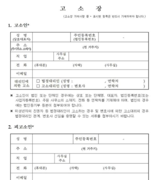
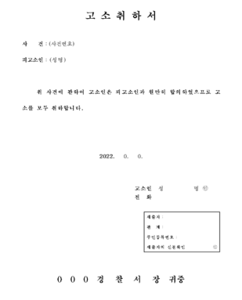

좋은 변호사 찾기 어려우시죠?
안심하세요
내 일처럼 전력을
다 하지 않는 변호사는
절대 YK의 일원이
될 수 없습니다.
내가 찾던 변호사들이 있는 곳,
IT’s YK
YK GPT 궁금한 키워드를 검색해보세요.
변호사 추천부터
상담 사례까지
즉시
확인할 수 있습니다.
- 소송 없이 합의 및 조정이 필요한 경우
- 소송에서 이길 수 있는지 궁금한 경우
- 증거 수집이 필요한 경우
- 사기 피해가 걱정되는 경우


YK는 13,000명에게
희망이 되었습니다.
이번엔 당신이 이길 차례입니다.
나와 유사한 승소 사례 찾기
의뢰인의 성공은
YK의 성공입니다.
2012년 1인 법률 사무소에서 2023년 160인의
대형 로펌이 되기까지
YK는 의뢰인을 대신해
유능한 인재들을 영입하고
의뢰인의 성공을
최우선의 가치라 여겨왔을 뿐입니다.
- 전국지사
- 0 개
- 변호사
- 0 인
- 누적성공사례
- 0 건